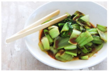

Bok Choi
Japanese Vegetarian
Five week course in London
A five week introduction to traditional
vegetarian meals,teaching you a selection of
rice and noodle dishes.
 Teriyaki Sauce
Teriyaki Sauce
Sauces Masterclass
One day workshop
An intensive one-day course looking at how to
create the most delicious sauces for use in
a range of Japanese cookery.